Next: Bibliography
Spatial Extrema of Advected Scalars
G. D. McBain
School of Engineering,
James Cook University,
Townsville, QLD 4811, Australia
This note concerns stationary solutions of the
advection-diffusion equation without source or sink terms; for
example, the steady-state temperature field in a pure fluid or ideal
mixture when viscous dissipation, radiation, work against external
forces, the Dufour effect, etc. may be neglected. Multiple advecting
flows, such as occur in multicomponent mixtures, are explicitly
included.
That no such scalar field can possess a strong relative maximum
or minimum at an interior point of its domain of existence follows
from the positive role of diffusion in eliminating them and the
inability of advection to create them. This is reflected
mathematically in the positive tensorial character of the diffusivity
and the elliptic nature of the equation. The result is easily deduced
from Hopf's Maximum Principle. Here, however, an alternative original
and quite different proof is presented which, by avoiding the artifice
of a comparison function and using vectorial and tensorial concepts
rather than a general calculus of several variables, is, it is hoped,
more conducive to physical intuition. The use of vectors also frees
the result from any particular coordinate system. Since it adds
little extra complexity, an anisotropic diffusivity is considered;
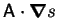 being replaced by
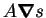 in the special
case of isotropy.
We begin with some definitions.
A divergence-free vector field, 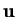, satisfies
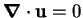.
A positive tensor, 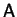, is one for which
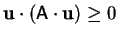 for all vectors
, with equality implying 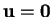.
If the 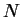 scalar functions 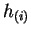 and divergence-free vector
fields
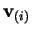 and the positive tensor field
are all continuously differentiable then
is the steady-state advection-diffusion equation for the scalar field,
.
A regular solution of a partial differential equation is one
for which all the partial derivatives occurring in the equation exist
and are continuous [1].
A strong local extremum of a scalar field is a point with a
neighbourhood in which the value of the field at every point is
greater than at the extremum.
Theorem: No regular solution of the
steady-state advection-diffusion equation possesses a strong local
extremum.
Proof:
The idea for this proof, suggested by Prof. Bob Street
(1999, pers. comm., 4 Feb.), is to recast the equation in quasilinear
elliptic form, for which the result is known.
Carrying out the divergence,
or
where
and 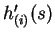 is the derivative of 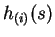.
In Cartesian tensor notation with the summation
convention in force, this is
which is of the form for which Hopf's Maximum Principle is shown to
hold in treatises on partial differential equations; e.g. Courant and
Hilbert [2]. The key here is that is
positive.
Alternative Proof:
The proof is by contradiction: assume that there does exist an
interior relative extremum. For definiteness, and without loss of
generality, take this to be a minimum.
Construct a family of rays originating at the minimum and terminating when
they encounter either:
- (i)
- a boundary point of the domain; or
- (ii)
- a stationary point, with respect to the ray, of ; i.e.
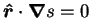, where 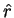 is the unit radial vector from the
minimum.
Except at the origin, and possibly the rays' termini, is strictly
increasing along the rays:
by the definitions of a minimum and the rays (ii).
Choose a value 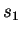 of between that at the minimum and the least of those
at the rays' termini.
Let 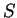 be the set of points with 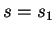 passed through by the rays.
Each ray intersects exactly once, and, since possesses at
least two continuous spatial derivatives, is closed
and smooth enough to have a well-defined unit outward normal, 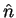.
No ray is tangent to , since then the ray should have terminated,
by (ii); thus,
Now, by definition of the vector triple product,
but
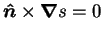, since the normal of a level surface
is parallel to the gradient; therefore,
by (6), (7) and since
is positive. Thus, the inward diffusive flux is
positive over the entire surface.
Integrate the steady-state advection-diffusion equation (1)
over the volume 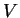 enclosed by :
Applying the divergence theorem gives:
of which the right hand side is positive by (9).
The left hand side, however, vanishes;
| 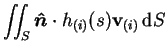 |
 |
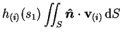 |
(12) |
| |
|
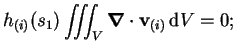 |
(13) |
by virtue of the hypotheses on the
.
This is a contradiction, so that the theorem is proved.
Notes:
- The alternative proof may be summarized as follows. The
existence of a strong local extremum would imply the existence of a
closed level surface on which the normal component of the gradient,
and so the normal component of the diffusive flux, must be of a single
sign. Thus, there would always be a net diffusion through the
surface, but the net advection would vanish.
- The application to the multicomponent energy equation is clear
(cf. [3]). The variables , ,
and
are the temperature, (tensor) conductivity,
partial specific enthalpies and absolute species fluxes, respectively.
The required assumption is that the partial specific enthalpies are
independent of pressure and composition. The absolute species fluxes
are divergence-free because the species they represent are conserved.
- For many common fluids, the diffusivity is isotropic;
i.e. a product of a (positive) scalar field and the Kronecker delta; and so is
symmetric and positive definite, as required.
- In the special case
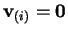 and
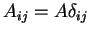, where 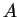 is a constant,
the steady-state advection-diffusion equation (1)
reduces to Laplace's equation, for which the
corresponding result is classical [4].
- The diffusivity and velocities can depend on , so that the equation
is only quasilinear. In the proof, is assumed given, so that
and the
can be re-expressed as functions of position.
- Completely analogous theorems hold in one and two dimensions.
- One can conclude that the temperature minimum apparent in the
two-dimensional numerical solutions of Weaver and
Viskanta [5,6], and attributed to interdiffusion
(the advection of enthalpy by the diffusive flux of a multiple
species), was erroneous. The source of the error is the inconsistent
treatment of whether the mixture enthalpy did or did not depend on the
composition. The sine qua non of interdiffusion is the
difference in specific heat capacities of the different species, and
interdiffusion only arises from a (frequently convenient)
repartitioning of the enthalpy fluxes due to the species fluxes
into a bulk advective flux and 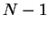 interdiffusion fluxes. It is
essential, therefore, to treat the mixture enthalpy or specific heat
capacity, consistently in the bulk advection and interdiffusion terms.
A concise consistent derivation of the energy equation for a binary
mixture may be found in reference [7]; a lengthier
discussion has been given elsewhere [8].
- Extrema might occur if there were source or sink terms in the
equations, such as, for the case of the energy equation when the
scalar is temperature, one or more of the components changed phase in
the domain; the Dufour effect were appreciable; or there were viscous
heating.
- Extrema are of course possible in transient
advection-diffusion, as for example they may be specified in the
initial conditions. An interesting but as yet (to my knowledge)
unanswered question is whether strong local extrema can arise in the
evolution of a scalar field; this was predicted in the two-dimensional
numerical solutions of Bergman and Hyun [9] for the mass
fraction of tin in a nonisothermal amalgam with lead.
Next: Bibliography
Geordie McBain
2000-08-10